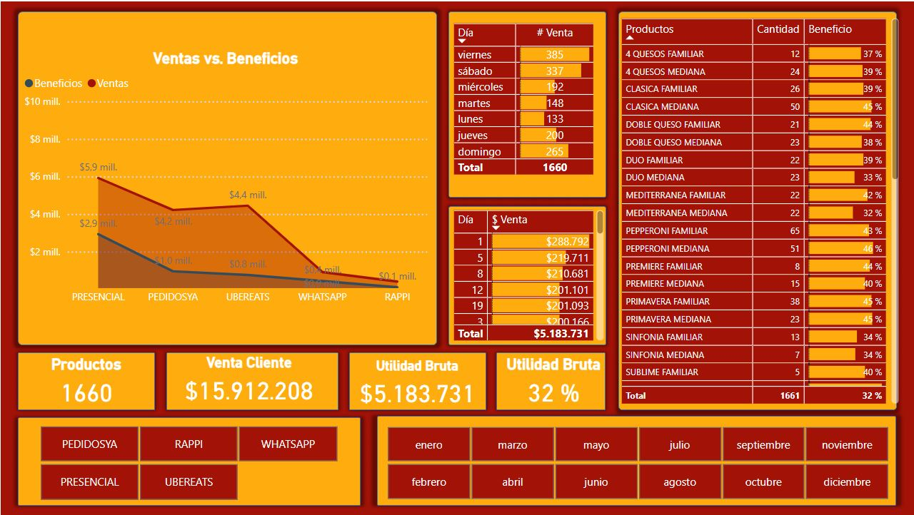

Detalles del Proyecto

Dashboard: Análisis de Ventas y Beneficios en Restaurantes
Este dashboard interactivo presenta un análisis detallado de las ventas y beneficios de un restaurante, permitiendo evaluar el rendimiento por canal de venta, día de la semana y producto.
Principales funcionalidades y valor agregado:
- Comparación de Ventas vs. Beneficios: Un gráfico de líneas muestra el desempeño de cada canal de venta (Presencial, PedidosYa, UberEats, WhatsApp y Rappi), facilitando la identificación de los más rentables.
- Distribución de ventas por día: Se presentan los días con mayor volumen de ventas, permitiendo detectar patrones de consumo y optimizar estrategias de oferta y demanda.
- Análisis de ingresos diarios: Una tabla desglosa las ventas por día, ayudando a monitorear la evolución de ingresos en el mes.
- Ranking de productos: Se muestra la cantidad vendida y el porcentaje de beneficio de cada producto, destacando cuáles generan mayor rentabilidad.
- Indicadores clave: Métricas como la cantidad total de productos vendidos, el monto total de ventas, la utilidad bruta y el margen de ganancia proporcionan una visión clara del desempeño financiero.
Este dashboard permite a los dueños de restaurantes y gerentes de ventas tomar decisiones estratégicas basadas en datos, optimizar su oferta de productos y maximizar la rentabilidad.
Repositorio
Puedes acceder al código fuente en GitHub.
Volver al Portafolio